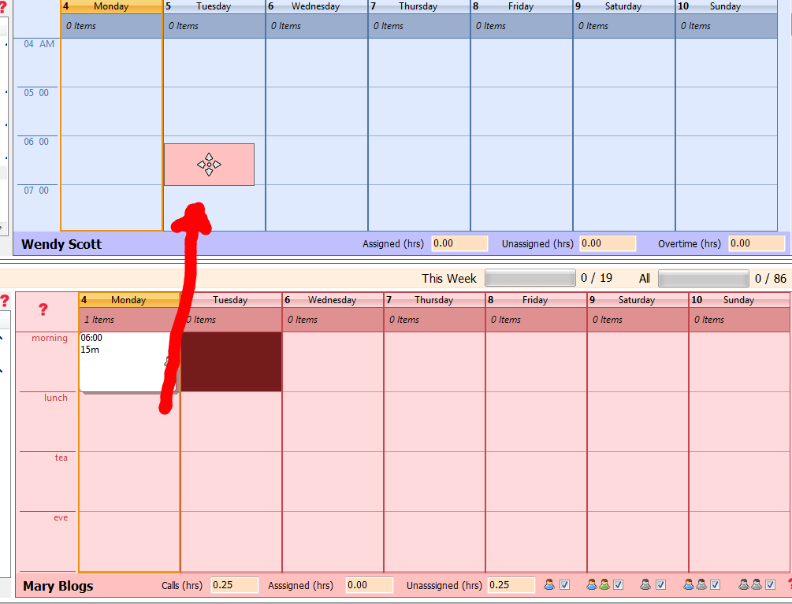

To assign a service user call to a care worker is quite simple.
First find the call(s) you wish to assign. Multiple calls can be selected by holding down the shift key and selecting the calls.
Once you have selected all the calls you wish to assign, make sure that the care worker you wish to assign to has been selected from the worker list.
Now hold down the CTRL key and click on one of the calls selected and you will see a selection box appear (shown below). Keep the mouse button held down and just move this over the care workers' calendar and release the mouse button.
